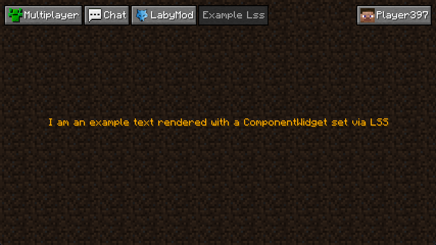

Understand LSS
If you've worked with CSS before, LSS shouldn't be all too new; both share a similar basic syntax. We have implemented LSS as a system to design and theme responsive GUIs (Screens) conveniently; no more OpenGL hustle, just Activities, Widgets, and LSS.
LSS in a Nutshell
The main thing you need to know about LSS is that while you add LSS StyleSheets to your Activity, you can't manipulate Activities directly, only the Widgets inside of that Activity. A list of all Widgets delivered with the API can be found here.
CSS and LSS have very similar syntax, but here are some of their differences:
- CSS has classes, and LSS has ids that can be added to Widgets directly in the Activities Java code.
- In CSS, you can declare the type. You can do the same in LSS; there is one thing to keep in mind: if the name of a Widget ends with the suffix "Widget", the suffix gets removed (so, for example,
Componentinstead ofComponentWidgetorIconinstead ofIconWidget). - LSS has no types like
pfor pixels, etc. LSS always works with relative pixels (1 = one pixel on GUI scale 1, four pixels on GUI scale 2, and 16 pixels on GUI scale 3)
Creating Activities with LSS
Looking back at the last page, we created an Activity with a ComponentWidget but without LSS. We'll again use the last page's result to make it work with LSS.
We start by deleting the postStyleSheetLoad method, which we used before to set the position of our Widget.
As LSS is doing that now, we no longer need this method.
Now we head to our resources folder in the core module (src/main/resources/) and go to (or create) the following folder structure: assets/example/themes/vanilla/lss/ (replace example with the namespace of your addon).
After that, create a new file called example.lss.
Now the magic part: as we didn't set an id, we'll use the type.
We have a ComponentWidget in our Activity, so we're going to type Component { into the first line.
As we want our Component centered, we'll add left: 50%; and top: 50%; to the following lines.
If we were doing that, the Component would start at 50% of the screen each, adding alignment-x: center; and alignment-y: center; as the following lines.
This will adjust the anchor point of the Widget to its center, so 50% from the left will be exactly at the center of the Widget.
The last thing we'll need to do here is close the block with }, and we're done.
All we have to do now is go back to our Activity that uses LSS, add the Link annotation above and add "example.lss" as the annotation's argument.
Theoretically, we're done. But there are a few things left that we can do.
For once, we can remove the field componentWidget, as we don't need the Widget anywhere else anymore.
We can also remove the argument NamedTextColor.GOLD from the ComponentWidget's constructor call and add text-color: gold; to our LSS file.
Now, there is one more thing we can do, and that is to add an id to our Widget.
We'll do this by just calling componentWidget.addId("test-widget") and replacing Component in our LSS StyleSheet with .test-widget.
This will be very important when creating complex Activities so that blocks for the same Widget don't overwrite each other.
And we're done. You can debug your Activity by pressing CTRL + D and pressing ARROW RIGHT until you see the name of your Activity if ever something doesn't work like expected.
LSS Activity Result
Like before, this is what the code we described above would look like:
@AutoActivity
@Link("example.lss")
public class ExampleLssActivity extends SimpleActivity {
@Override
public void initialize(Parent parent) {
super.initialize(parent);
ComponentWidget componentWidget = ComponentWidget.text(
"I am an example text rendered with a ComponentWidget set via LSS"
);
componentWidget.addId("test-widget");
this.document().addChild(componentWidget);
}
}
.test-widget {
left: 50%;
top: 50%;
alignment-x: center;
alignment-y: center;
text-color: gold;
}

Injecting Blocks Into Other StyleSheets
todo: write